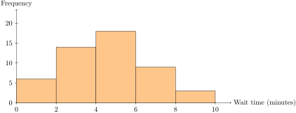
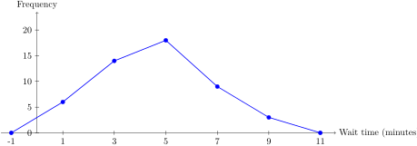

Suppose 12 students report the number of siblings they have: 0, 1, 1, 1, 2, 2, 2, 3, 3, 3, 4, 4. The dot plot in Figure 2.2.2 stacks one dot for each student above the corresponding number of siblings.
Section 2.2 Graphs for Displaying Data
Graphs are often faster to read than tables because they turn numerical information into shape and height. Different graphs are useful for different kinds of data. A dot plot works well for small sets of discrete numerical data. A bar chart is good for comparing categories. A stem-and-leaf plot keeps the original data values visible. A histogram and a frequency polygon are especially useful for grouped quantitative data.
Example 2.2.1. A Dot Plot of Siblings.

The horizontal axis is labeled Number of siblings and is marked at 0, 1, 2, 3, and 4. One dot is stacked above 0. Three dots are stacked above 1. Three dots are stacked above 2. Three dots are stacked above 3. Two dots are stacked above 4. The tallest stacks occur at 1, 2, and 3, each with frequency 3.
A dot plot is compact and honest. It shows every observation while still making the distribution easy to read. For small data sets, that is a nice combination.
For categorical data, a bar chart is usually the better choice. The categories are placed on one axis, and the height of each bar shows its frequency or relative frequency.

The horizontal axis lists Auto, Metro, Bike, and Walk. The vertical axis is labeled Frequency and runs from 0 to 6. The Auto bar reaches 5, the Metro bar reaches 3, and the Bike and Walk bars each reach 2. Auto is the tallest bar.
The bar chart in Figure 2.2.3 shows the same information as Table 2.1.2, but now the comparisons are visual. We can tell right away that auto is the most common category and that bike and walk are tied.
Example 2.2.4. A Stem-and-Leaf Plot.
Consider these quiz scores: 72, 74, 76, 78, 80, 81, 83, 83, 85, 88, 91, 94. A stem-and-leaf plot separates each score into a stem and a leaf. In this case the tens digits are stems and the ones digits are leaves, as shown in Table 2.2.5.
| Stem | Leaves |
|---|---|
| 7 | 2, 4, 6, 8 |
| 8 | 0, 1, 3, 3, 5, 8 |
| 9 | 1, 4 |
The key idea is that the plot still contains the original data values. For example, the leaf 3 on stem 8 represents a score of 83. A stem-and-leaf plot is handy when the data set is not too large and you want both a picture and the exact values.
When the data is grouped into intervals, a histogram is often the natural graph. The bars in a histogram touch because the intervals sit next to each other on a number line. The histogram in Figure 2.2.6 uses the grouped wait-time data from Table 2.1.4.

The horizontal axis is labeled Wait time in minutes and is marked at 0, 2, 4, 6, 8, and 10. The vertical axis is labeled Frequency and runs from 0 to 20. Five adjacent bars represent the intervals [0,2), [2,4), [4,6), [6,8), and [8,10). Their heights are 6, 14, 18, 9, and 3 respectively. The tallest bar is the interval from 4 to 6 minutes.
A frequency polygon is built from the same grouped data, but instead of bars we plot the class midpoints against the frequencies and join the points with line segments. This is especially helpful when we want to compare shapes or place more than one distribution on the same set of axes.

The horizontal axis is labeled Wait time in minutes and the vertical axis is labeled Frequency. A polyline starts at the point (-1,0), rises to (1,6), then to (3,14), peaks at (5,18), drops to (7,9), then to (9,3), and returns to (11,0). The highest point occurs at the midpoint 5, corresponding to the interval from 4 to 6 minutes. The two endpoints lie one class width beyond the first and last class midpoints.
Each graph has its own job. The trick is not to memorize names blindly, but to match the graph to the kind of data you have and the question you want to answer.
The table below gives a quick rule of thumb for the displays in this section.
| Display | Best for | What it shows well |
|---|---|---|
| Dot plot | Small quantitative data sets |
Individual values and repeated values.
Use it when the actual data points are the main thing to see.
|
| Bar chart | Categorical data |
Counts or percentages across groups.
Good examples are eye color, commute method, or class standing.
|
| Stem-and-leaf plot | Moderate quantitative data sets |
How many values fall in each stem, such as the 70s, 80s, and 90s.
It still keeps the original values visible.
|
| Histogram | Large or grouped quantitative data |
The overall shape across intervals.
Use it when exact individual values matter less than the pattern.
|
Activity 2.2.9. Choosing the Right Graph.
Before drawing anything, the first job is to choose a graph that matches the data. The same data set can often be shown in more than one way, but some displays fit the variable much better than others.
(a)
For each variable below, decide which graph would be most appropriate: bar chart, dot plot, stem-and-leaf plot, histogram, or frequency polygon.
(b)
Explain your choice in a sentence or two. Think about whether the data is categorical or numerical, and whether the values are individual observations or grouped into classes.
(c)
Use these examples: eye color, number of siblings, height, and grouped commute times.
Activity 2.2.10. Bar Charts from Class Data.
Use the data set collected in Section 1.1. Categorical variables are often easiest to understand when they are shown in a bar chart.
(a)
Choose one nominal variable from the class data, such as eye color, whether a student wears glasses, handedness, or favorite subject. Make a frequency table and then draw a bar chart.
(b)
If the variable has a natural order, such as year in school, make sure the bars are arranged in that order.
(c)
Write two observations from the graph. Which category is most common? Which category is least common?
Activity 2.2.11. Dot Plots and Stem-and-Leaf Plots.
Use the quantitative data from the class collection. Small data sets work especially well for displays that keep the individual values visible.
(a)
Choose a discrete variable from the class data, such as number of siblings or number of pets. Make a dot plot and describe the shape of the distribution.
(b)
Choose another quantitative variable, such as height or commute time. If the data values are not too many, make a stem-and-leaf plot. If there are too many repeated values, use a dot plot instead.
(c)
Compare the two graphs. Which one makes it easier to see the exact values? Which one makes it easier to see the overall pattern?
Activity 2.2.12. Grouped Graphs from Class Data.
If the class data include a continuous measurement like height or commute time, you can group the values into classes and make a histogram or frequency polygon. That is the natural next step when the raw values are too spread out to show clearly one by one.
(a)
Choose one continuous variable from the class data, such as height, commute time, or distance from school. Group the values into a reasonable set of class intervals.
(b)
Use the grouped data to draw a histogram. Then sketch a frequency polygon using the class midpoints.
(c)
Compare the histogram and the frequency polygon. Which one is better for seeing the shape of the data? Which one makes the class intervals easier to read?